Catálogo de Productos
Importadores directos de herramientas hidráulicas e industriales. Más de 12 años en el mercado, stock disponible y envíos a todo el país.
Importadores directos de herramientas hidráulicas e industriales. Más de 12 años en el mercado, stock disponible y envíos a todo el país.
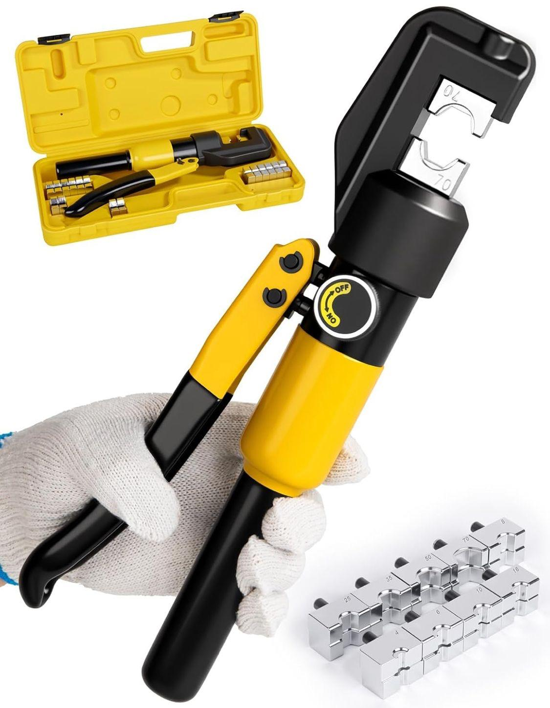
Pinza hidráulica para indentar/engastar terminales. Incluye 7 matrices y maletín plástico de transporte.
| Modelo | HHY-70A |
| Rango de crimpado | 6–70 mm² |
| Tipo de crimpado | Hexagonal |
| Fuerza hidráulica | 5 Ton |
| Carrera del pistón | 10 mm |
| Matrices incluidas | 6 / 10 / 16 / 25 / 35 / 50 / 70 mm² |
| Incluye | Maletín plástico de transporte |
| Peso bruto | 2.8 kg |
| Medidas de empaque | 355 × 173 × 83 mm |
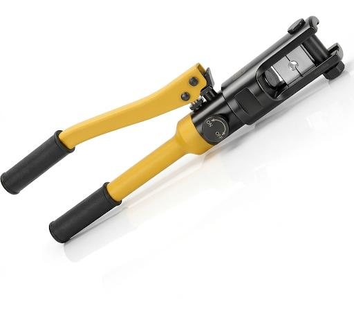
Pinza hidráulica para indentar/engastar terminales y conectores. Incluye 8 matrices y maletín plástico.
| Modelo | HHY-120A |
| Rango de crimpado | 10–120 mm² |
| Tipo de crimpado | Hexagonal |
| Fuerza hidráulica | 7 Ton |
| Carrera del pistón | 15.5 mm |
| Matrices incluidas | 10 / 16 / 25 / 35 / 50 / 70 / 95 / 120 mm² |
| Incluye | Maletín plástico de transporte |
| Peso bruto | 4.5 kg |
| Medidas de empaque | 430 × 190 × 90 mm |
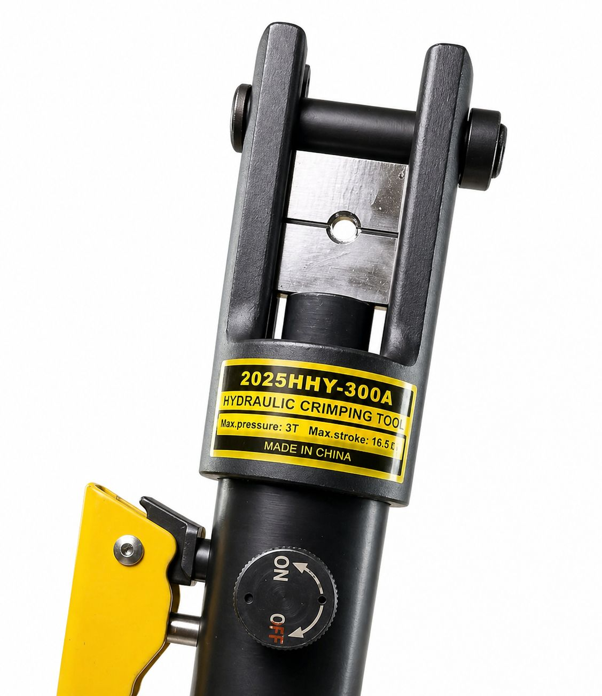
Pinza hidráulica para indentar/engastar terminales y conectores. Incluye 11 matrices y maletín plástico moldeado.
| Modelo | HHY-300A |
| Rango de crimpado | 16–300 mm² |
| Tipo de crimpado | Hexagonal |
| Fuerza hidráulica | 9 Ton |
| Carrera del pistón | 16 mm |
| Matrices incluidas | 16 / 25 / 35 / 50 / 70 / 95 / 120 / 150 / 185 / 240 / 300 mm² |
| Incluye | Maletín plástico moldeado |
| Peso bruto | 6.4 kg |
| Medidas de empaque | 533 × 206 × 102 mm |
/1.jpeg)
Pinza hidráulica para terminales con válvula de seguridad (zafe). Mayor fuerza y seguridad en el crimpado.
| Modelo | HHY-300 |
| Rango de crimpado | 16–300 mm² |
| Tipo de crimpado | Hexagonal |
| Fuerza hidráulica | 11 Ton |
| Válvula de seguridad | Sí |
| Carrera del pistón | 17 mm |
| Matrices incluidas | 16 / 25 / 35 / 50 / 70 / 95 / 120 / 150 / 185 / 240 / 300 mm² |
| Peso bruto | 9.5 kg |
| Medidas de empaque | 540 × 120 × 240 mm |

Pinza hidráulica con bomba manual incluida HHB-600A. Manguera 1.2 m y caja metálica de transporte.
| Modelo | HHY-300CF |
| Rango de crimpado | 16–300 mm² |
| Tipo de crimpado | Hexagonal |
| Fuerza hidráulica | 11 Ton |
| Carrera del pistón | 28.5 mm |
| Matrices incluidas | 16 / 25 / 35 / 50 / 70 / 95 / 120 / 150 / 185 / 240 / 300 mm² |
| Bomba incluida | HHB-600A |
| Manguera | 1.2 m alta presión |
| Incluye | Caja metálica de transporte |
| Peso bruto | 11.8 kg |
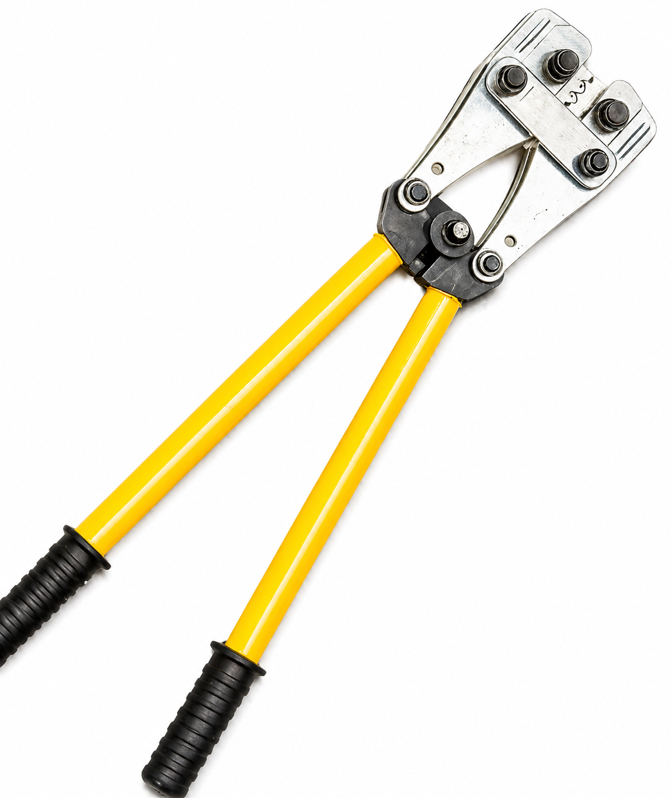
Pinza para indentar terminales de cobre con crimpado hexagonal. Diseño compacto y liviano.
| Modelo | HHYJ-50 |
| Aplicación | Terminales de cobre |
| Rango de crimpado | 6–50 mm² |
| Tipo de crimpado | Hexagonal |
| Matrices incluidas | 6 / 10 / 16 / 25 / 35 / 50 mm² |
| Peso bruto | 1.4 kg |
| Medidas de empaque | 400 × 130 × 50 mm |

Pinza hidráulica para indentar terminales con zafe y sistema de seguridad CCD/CCG.
| Modelo | HHY-400B |
| Rango de crimpado | 16–400 mm² |
| Tipo de crimpado | Hexagonal |
| Fuerza hidráulica | 11 Ton |
| Carrera del pistón | 32 mm |
| Matrices incluidas | 50 / 70 / 95 / 120 / 150 / 185 / 240 / 300 / 400 mm² |
| Peso bruto | 11.5 kg |
| Medidas de empaque | 770 × 135 × 240 mm |
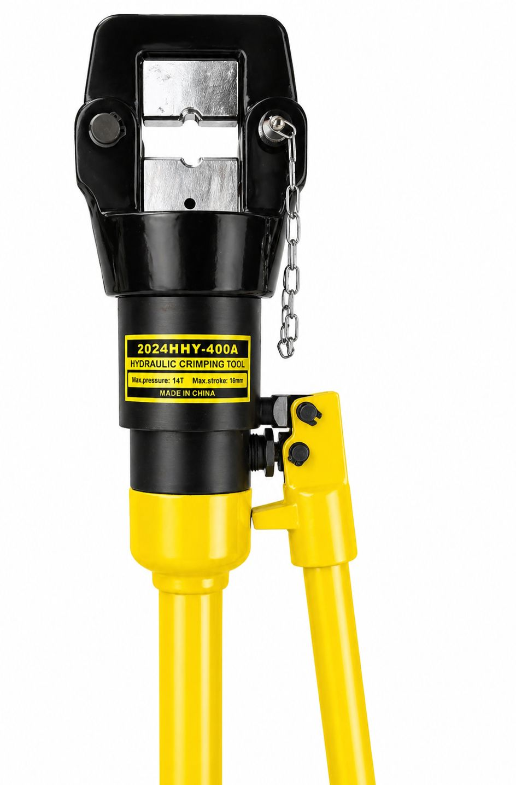
Pinza hidráulica de alta fuerza para indentar terminales. Incluye 12 matrices y maletín de transporte.
| Modelo | HHY-400A |
| Rango de crimpado | 16–400 mm² |
| Tipo de crimpado | Hexagonal |
| Fuerza hidráulica | 14 Ton |
| Carrera del pistón | 16.5 mm |
| Matrices incluidas | 16 / 25 / 35 / 50 / 70 / 95 / 120 / 150 / 185 / 240 / 300 / 400 mm² |
| Peso bruto | 15 kg |
| Medidas de empaque | 625 × 110 × 240 mm |

Pinza hidráulica de máxima capacidad con bomba manual HHB-600A. Cabeza tipo yugo, caja metálica incluida.
| Modelo | HHY-500 |
| Tipo de cabeza | Yugo (sólida y durable) |
| Rango de crimpado | 16–500 mm² |
| Tipo de crimpado | Hexagonal |
| Fuerza hidráulica | 20 Ton |
| Carrera del pistón | 22 mm |
| Matrices incluidas | 70 / 95 / 120 / 150 / 185 / 240 / 300 / 400 / 500 mm² |
| Bomba incluida | HHB-600A |
| Manguera | 1.2 m alta presión |
| Peso bruto kit | 17.2 kg |
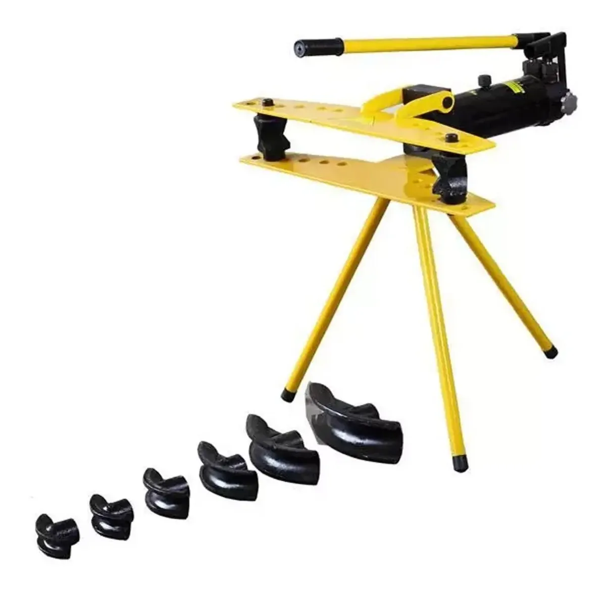
Dobladora hidráulica de caños con trípode. Doblado en frío. Incluye 6 zapatas.
| Modelo | HHW-2J |
| Ángulo de doblado | 0° a 90° |
| Método | Doblado en frío |
| Rango (Diám. exterior) | Ø21,3 a Ø60 mm |
| Fuerza hidráulica | 13 Ton |
| Carrera del pistón | 250 mm |
| Zapatas incluidas | 1/2" / 3/4" / 1" / 1 1/4" / 1 1/2" / 2" |
| Peso bruto | 48,2 kg |
| Medidas de empaque | 73 × 32 × 20 cm |
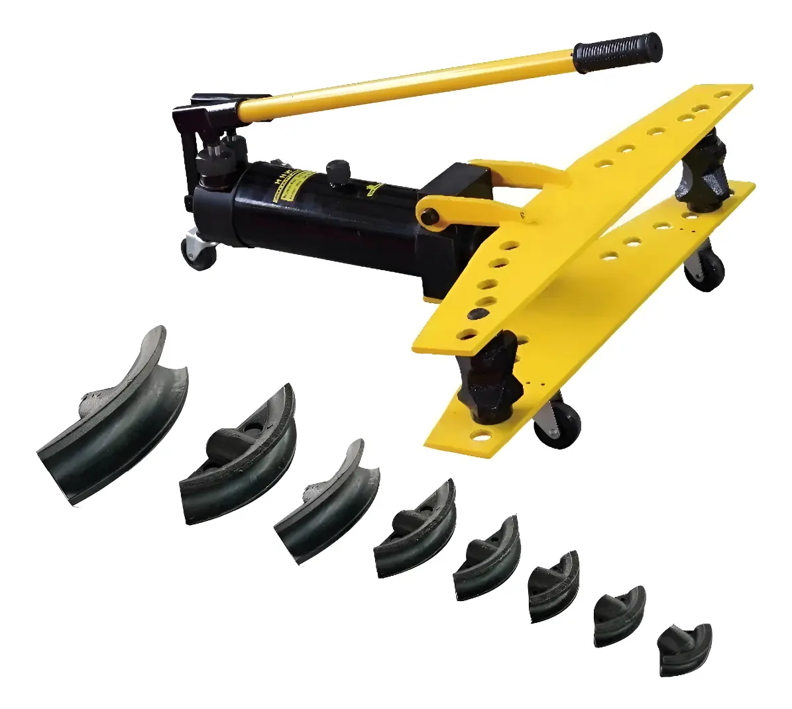
Dobladora hidráulica de caños para paredes gruesas con trípode. Doblado en frío hasta 3". Incluye 8 zapatas.
| Modelo | HHW-3J |
| Ángulo de doblado | 0° a 90° |
| Tipo | Paredes gruesas, con trípode |
| Rango (Diám. exterior) | Ø21,3 a Ø88,5 mm |
| Fuerza hidráulica | 20 Ton |
| Carrera del pistón | 290 mm |
| Zapatas incluidas | 1/2" / 3/4" / 1" / 1 1/4" / 1 1/2" / 2" / 2 1/2" / 3" |
| Peso bruto | 100,5 kg |
| Medidas de empaque | 94 × 40 × 21 cm |
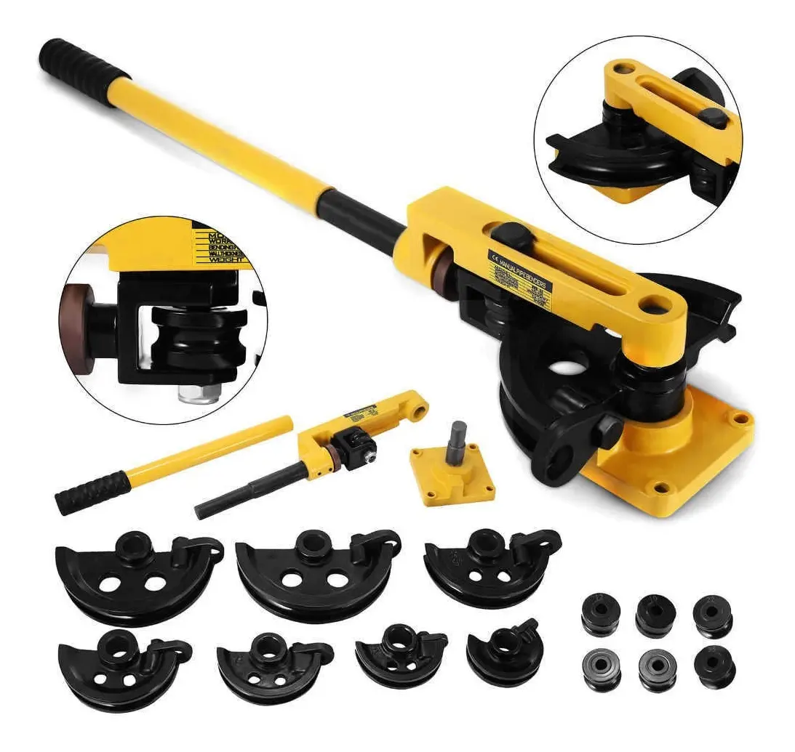
Dobladora manual con 7 conformadores (10 a 25 mm). Flexión hasta 180°. Matrices de acero casi irrompibles. Maletín plástico moldeado.
| Modelo | HHW-25S |
| Tipo | Manual |
| Rango de doblado | 10 mm – 25 mm |
| Ángulo máximo | 180° |
| Espesor de pared | 0,8 mm – 2 mm |
| Conformadores | 3/8" / 1/2" / 9/16" / 5/8" / 3/4" / 7/8" / 1" |
| Peso | 25 kg |
| Medidas de empaque | 660 × 460 × 180 mm |
| Incluye | Maletín de plástico moldeado resistente |
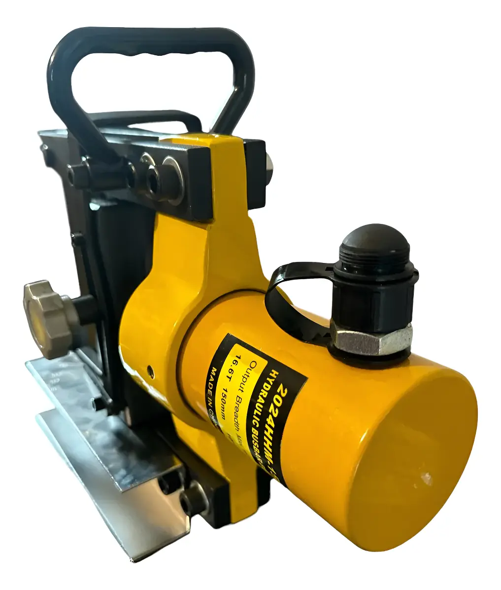
Dobladora hidráulica para barras planas de cobre/aluminio. Ideal para tableros eléctricos, celdas y puesta a tierra.
| Modelo | HHM-150W |
| Tipo | Barras planas (cobre / aluminio) |
| Ancho máx. de barra | 150 mm |
| Espesor máx. | 10 mm |
| Fuerza de salida | 16 Ton |
| Sistema | Simple efecto, retorno por resorte |
| Presión de trabajo | 700 bar |
| Peso | 34,8 kg |
| Medidas de empaque | 34 × 23 × 46 cm |

Cortadora hidráulica de varillas de acero. Corte limpio sin deformación. Compacta y liviana.
| Modelo | HHG-16 |
| Diámetro máx. | Ø 16 mm |
| Fuerza hidráulica | 7 Ton |
| Peso | 3,6 kg |

Cortadora hidráulica de mayor capacidad. Corta varillas de acero hasta Ø22mm sin esfuerzo.
| Modelo | HHG-22 |
| Rango de corte | Ø 4–22 mm |
| Fuerza hidráulica | 16 Ton |
| Peso | 6,2 kg |
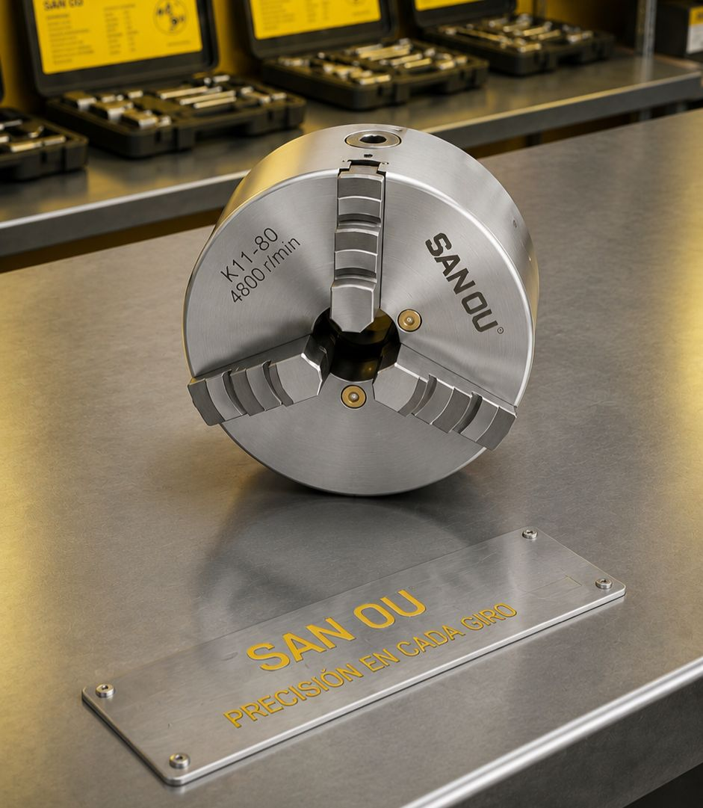
Plato de 3 mordazas autocentrantes con doble juego de mordazas. Para torno paralelo mecánico.
| Modelo | K11-80 |
| Diámetro exterior | Ø 80 mm |
| Mordazas | 3 autocentrantes |
| Pasaje de barra | Ø 16 mm |
| Toma mínima ext. | Ø 2 mm |
| Fijación | 3 bulones M6 sobre Ø 66 mm |
| Incluye | 2 juegos de mordazas, manija y bulones |
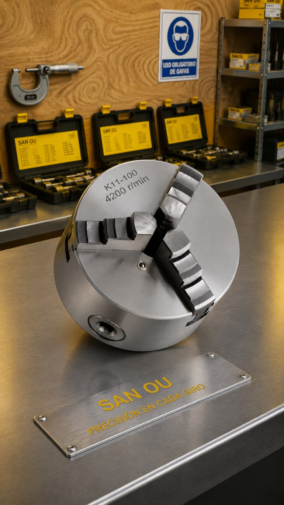
Plato de 3 mordazas autocentrantes. Alta precisión, velocidad máxima 3.500 rpm.
| Modelo | K11-100 |
| Diámetro exterior | Ø 100 mm |
| Mordazas | 3 autocentrantes |
| Vel. máxima | 3.500 rpm |
| Pasaje de barra | Ø 20 mm |
| Toma máx. ext. | Ø 90 mm |
| Toma máx. int. | Ø 80 mm |
| Peso | 4 kg |
| Incluye | 2 juegos de mordazas, manija y bulones |
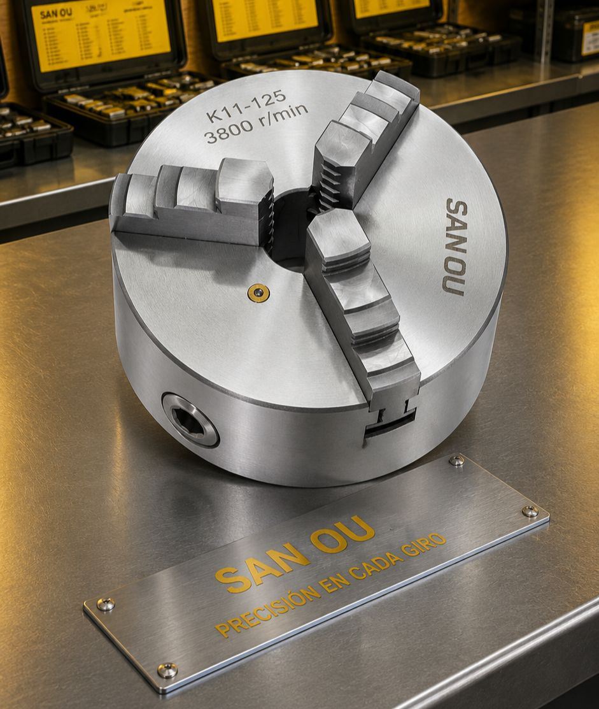
Plato de 3 mordazas autocentrantes con doble juego de mordazas.
| Diámetro exterior | Ø 125 mm |
| Mordazas | 3 autocentrantes |
| Pasaje de barra | Ø 30 mm |
| Toma máx. ext. | Ø 125 mm |
| Toma máx. int. | Ø 110 mm |
| Altura sin mordazas | 58 mm |
| Fijación | 3 bulones M8 sobre Ø 108 mm |
| Incluye | 2 juegos de mordazas |
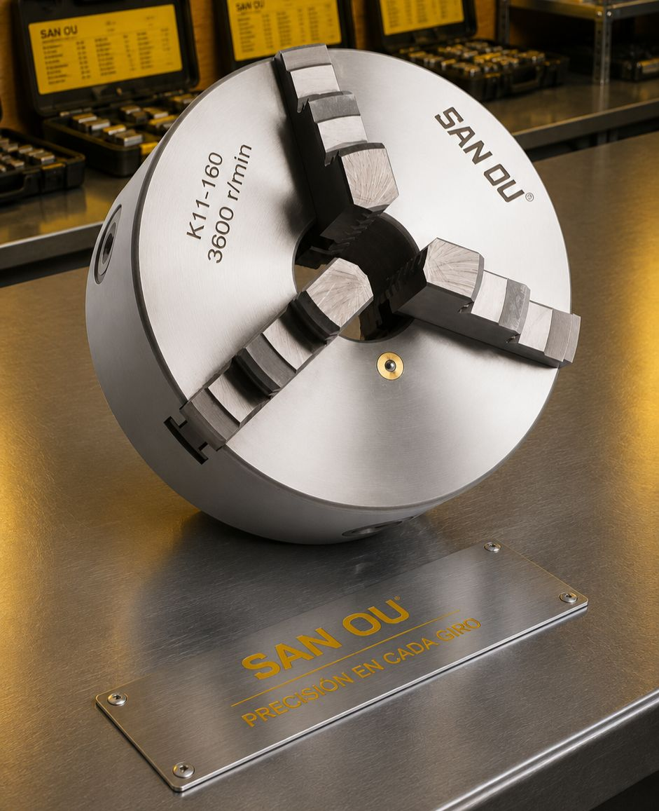
Plato de 3 mordazas autocentrantes con doble juego de mordazas. Montaje directo.
| Modelo | K11-160 |
| Diámetro exterior | Ø 160 mm |
| Mordazas | 3 autocentrantes |
| Pasaje de barra | Ø 45 mm |
| Toma máx. ext. | Ø 160 mm |
| Toma máx. int. | Ø 145 mm |
| Altura sin mordazas | 70 mm |
| Fijación | 3 bulones M8 sobre Ø 142 mm |
| Incluye | 2 juegos de mordazas, manual, manija y bulones |
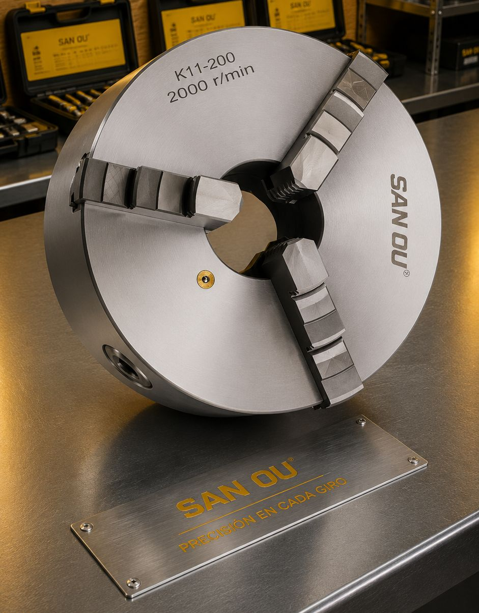
Plato de 3 mordazas autocentrantes. Alta precisión para tornos grandes.
| Diámetro exterior | Ø 200 mm |
| Mordazas | 3 autocentrantes |
| Pasaje de barra | Ø 65 mm |
| Toma máx. ext. | Ø 200 mm |
| Toma máx. int. | Ø 200 mm |
| Altura sin mordazas | 75 mm |
| Fijación | 3 bulones M10 sobre Ø 180 mm |
| Incluye | 2 juegos de mordazas, manual, manija y bulones |
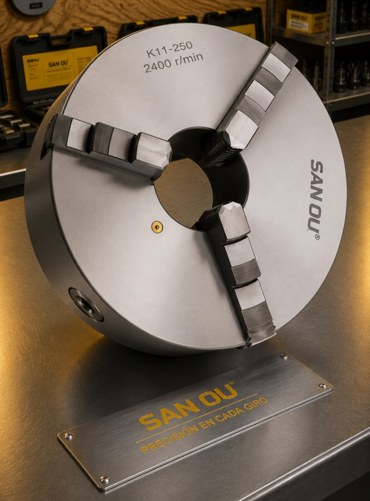
Plato de 3 mordazas autocentrantes de gran capacidad para tornos industriales.
| Diámetro exterior | Ø 250 mm |
| Mordazas | 3 autocentrantes |
| Montaje | Directo |
| Incluye | 2 juegos de mordazas |
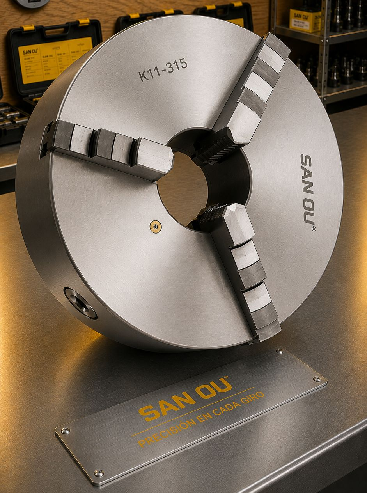
Plato de 3 mordazas autocentrantes con doble juego de mordazas. Para torno paralelo mecánico o cualquier máquina que requiera toma de piezas cilíndricas.
| Diámetro exterior | Ø 315 mm |
| Pasaje de barra | Ø 100 mm |
| Mordazas | 3 autocentrantes |
| Fijación | 3 bulones M16 sobre Ø 285 mm |
| Toma mínima (ext.) | Ø 10 mm |
| Toma máxima (ext.) | Ø 140 mm / Ø 315 mm (2° escalón) |
| Incluye | 2 juegos de mordazas, manija y manual |
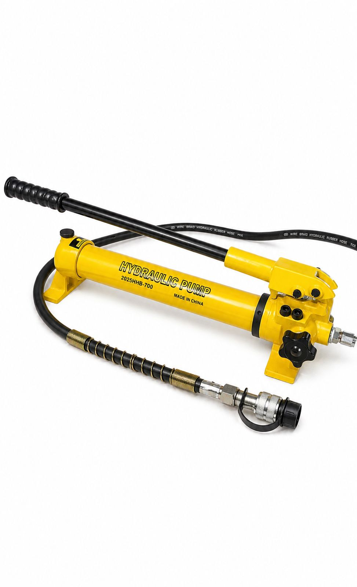
Bomba hidráulica manual de alta presión. Manguera de 1.8m incluida con acople rápido R2 3/8". Ideal para cilindros y herramientas hidráulicas San Ou.
| Modelo | HHB-700 |
| Tipo | Manual |
| Presión máx. | 700 bar |
| Manguera | 1,8 m alta presión |
| Acople | Rápido R2 3/8" |
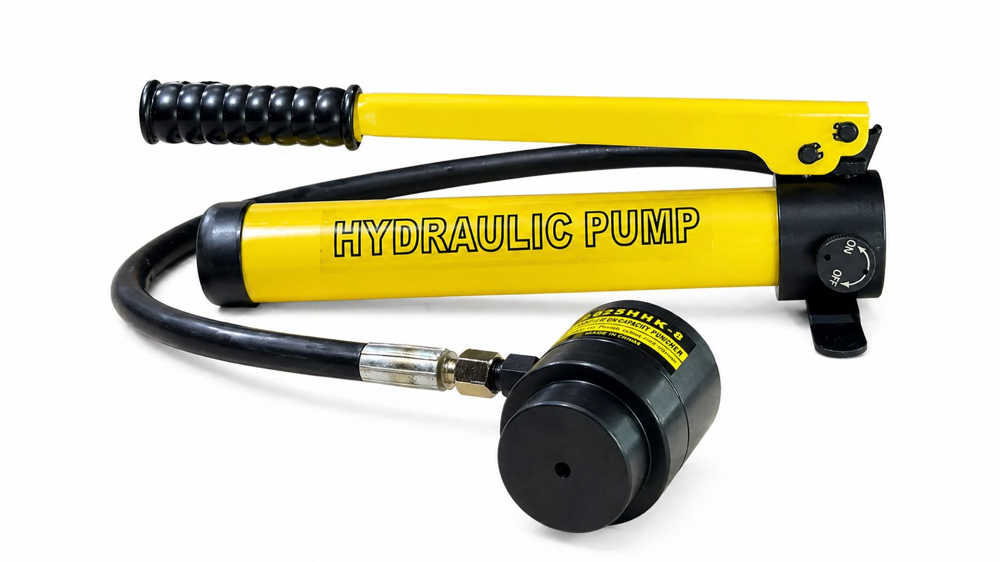
Sacabocados hidráulico para chapas y tableros eléctricos. Incluye 6 matrices y llave.
| Modelo | HHK-8 |
| Rango de corte | Ø 22–60 mm |
| Fuerza hidráulica | 9 Ton |
| Incluye | 6 matrices + llave |
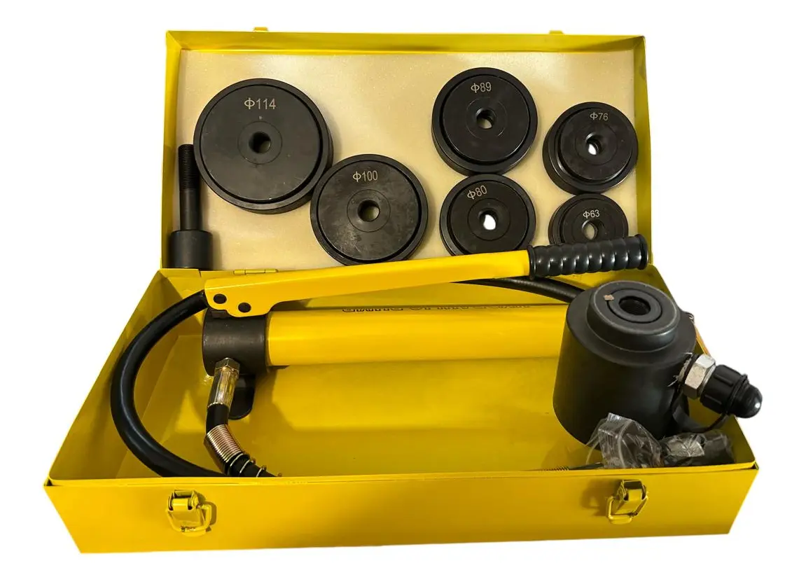
Sacabocados hidráulico de mayor capacidad para chapas y tableros eléctricos. Incluye 6 matrices y llave.
| Modelo | HHK-15 |
| Rango de corte | Ø 63–114 mm |
| Fuerza hidráulica | 13 Ton |
| Incluye | 6 matrices + llave |
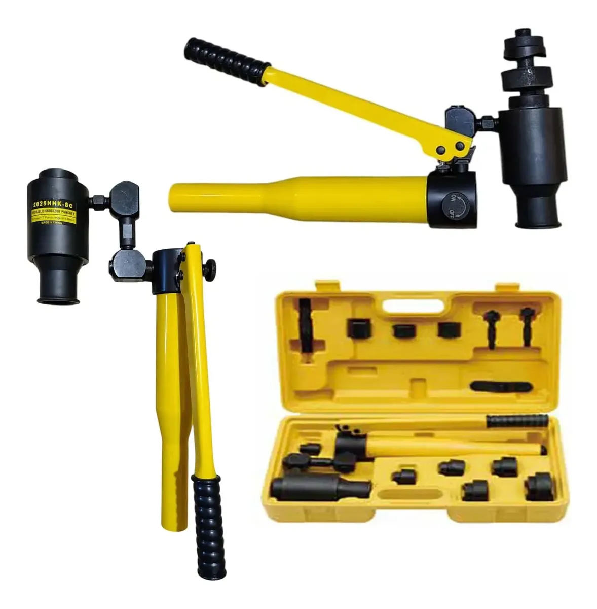
Sacabocados hidráulico monoblock. Diseño compacto y robusto para tableros eléctricos.
| Tipo | Monoblock |
| Rango de corte | Ø 22–60 mm |
| Aplicación | Tableros eléctricos / chapas |
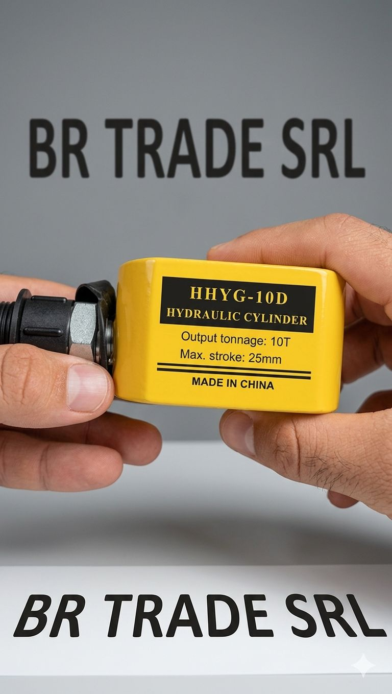
Cilindro hidráulico telescópico tipo pastilla. Compacto y liviano, ideal para espacios reducidos.
| Capacidad | 10 Ton |
| Carrera | 25 mm |
| Altura cerrada | 45 mm |
| Cap. de aceite | 22 cc |
| Peso | 1,4 kg |
| Bomba recomendada | HHB-700C |
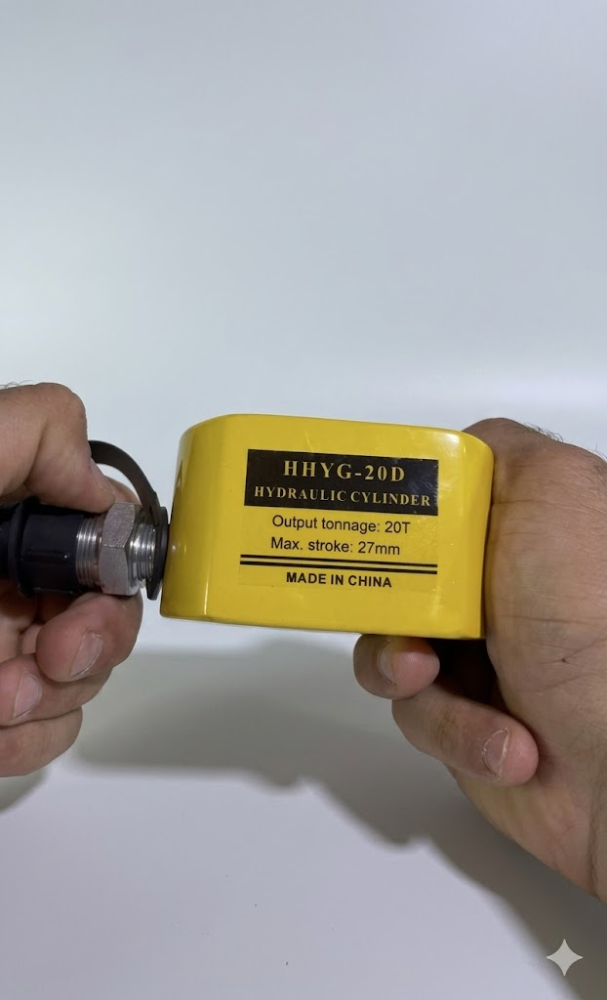
Cilindro hidráulico telescópico tipo pastilla. Mayor capacidad de carga con diseño compacto.
| Capacidad | 20 Ton |
| Carrera | 26 mm |
| Altura cerrada | 52 mm |
| Cap. de aceite | 41 cc |
| Peso | 2,5 kg |
| Bomba recomendada | HHB-700C |

Cilindro hidráulico telescópico tipo pastilla. Alta fuerza con estructura robusta de acero.
| Capacidad | 30 Ton |
| Carrera | 53 mm |
| Altura cerrada | 58 mm |
| Cap. de aceite | 67 cc |
| Peso | 4,1 kg |
| Bomba recomendada | HHB-700C |
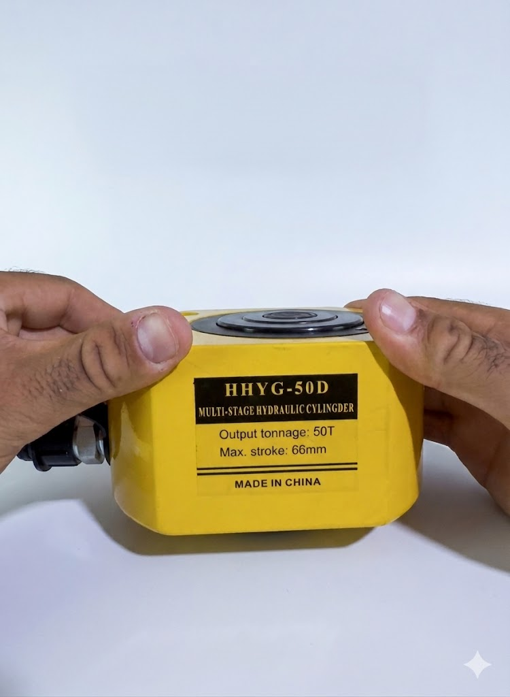
Cilindro hidráulico telescópico tipo pastilla. Para trabajos industriales de alta exigencia.
| Capacidad | 50 Ton |
| Carrera | 64 mm |
| Altura cerrada | 68 mm |
| Cap. de aceite | 113 cc |
| Peso | 6,4 kg |
| Bomba recomendada | HHB-700C |
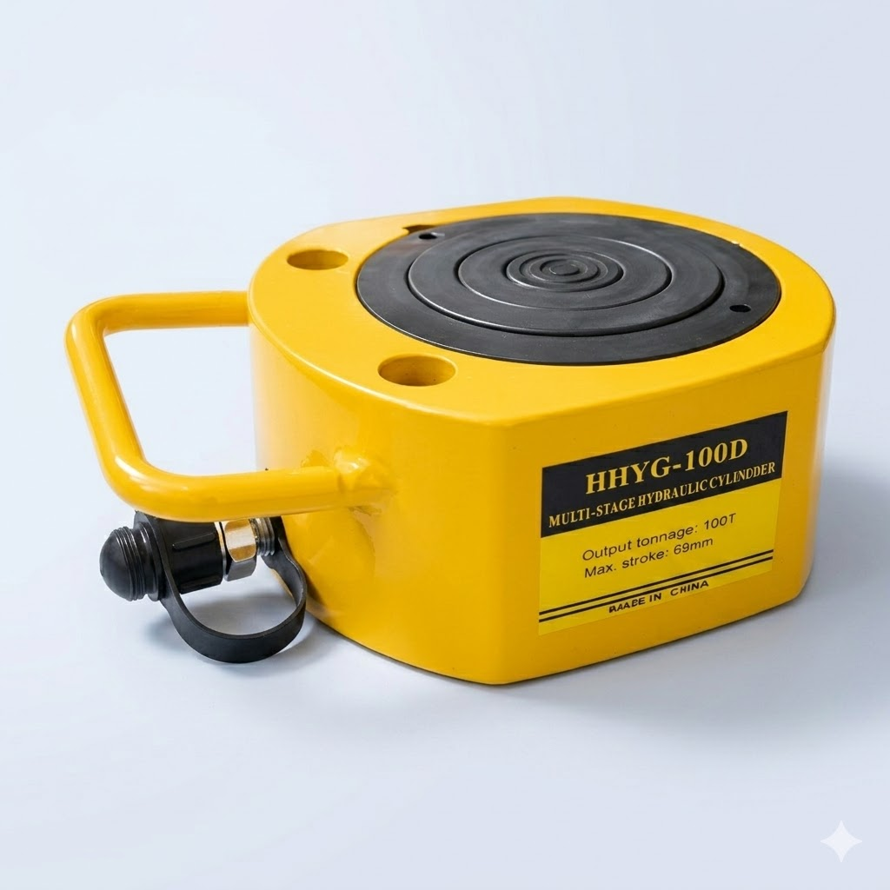
Cilindro hidráulico telescópico tipo pastilla. Máxima capacidad para aplicaciones industriales pesadas.
| Capacidad | 100 Ton |
| Carrera | 68 mm |
| Altura cerrada | 88 mm |
| Cap. de aceite | 225 cc |
| Peso | 14,5 kg |
| Bomba recomendada | HHB-700C |

Procesadora hidráulica 3 en 1: corta, dobla y punzona. Incluye 4 punzones.
| Modelo | HHM-120HS |
| Funciones | Corte + Doblado + Punzonado |
| Fuerza de salida | 23 Ton |
| Capacidad de barra | 120 × 10 mm |
| Punzones incluidos | 3/8" / 1/2" / 5/8" / 3/4" |
| Peso bruto | 62,9 kg |
| Medidas de empaque | 63 × 27 × 29 cm |

Cortadora hidráulica para barras planas de cobre/aluminio. Ideal para tableros eléctricos y puesta a tierra.
| Modelo | HHM-150VQ |
| Aplicación | Barras Cu/Al (tableros, puesta a tierra) |
| Ancho máx. de barra | 150 mm |
| Espesor máx. | 10 mm |
| Fuerza de corte | 20 Ton |
| Sistema | Simple efecto, retorno por resorte |
| Presión de trabajo | 700 bar |

Cortadora hidráulica compacta para barras planas de cobre/aluminio. Simple efecto con retorno por resorte.
| Modelo | HHM-150Q |
| Aplicación | Barras planas de cobre / aluminio |
| Ancho máx. de barra | 150 mm |
| Espesor máx. | 10 mm |
| Fuerza de salida | 20 Ton |
| Sistema | Simple efecto, retorno por resorte |
| Presión de trabajo | 700 bar |
| Peso | 33,6 kg |
| Medidas de empaque | 32 × 23 × 44 cm |
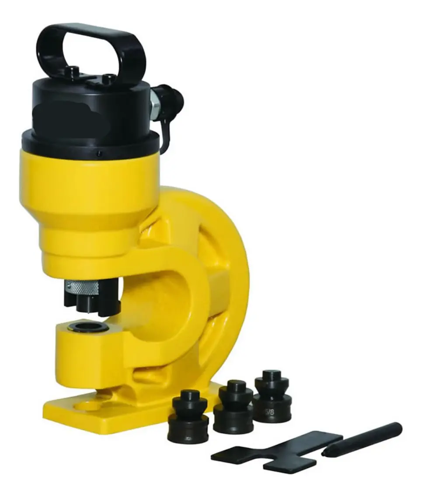
Punzonadora hidráulica para chapas de cobre y hierro. Punzona orificios de 3/8" a 3/4" sin necesidad de taladro.
| Modelo | HHM-60 |
| Rango de punzonado | 3/8" – 3/4" |
| Espesor máx. cobre | 10 mm |
| Espesor máx. hierro | 6 mm |

Extractor hidráulico de rodamientos con bomba integrada. Funciona con 2 o 3 patas. Apertura regulable.
| Modelo | HHL-5 |
| Capacidad | 5 Ton |
| Apertura | 50–200 mm |
| Patas | 2 o 3 patas intercambiables |
| Bomba | Integrada |

Multiplicador de torque manual para tuercas de alta exigencia en camiones, tractores, colectivos y maquinaria pesada.
| Torque máximo | 7500 Nm |
| Accionamiento | Manual por palanca |
| Encastre | 1 pulgada |
| Relación de fuerza | 1:78 |
| Largo aproximado | 330 mm |
| Peso aproximado | 9 a 10 kg |
| Material | Acero reforzado |
| Tubos incluidos | 32 mm y 33 mm |
| Presentación | Kit en maletín plástico |

Extractor de rulemanes tipo cepo. Extrae rulemanes, poleas, engranajes y piezas ajustadas a presión.
| Tipo de extractor | Cepo / separador de rulemanes |
| Rango de apertura | 75 mm a 105 mm |
| Cantidad de piezas | 9 piezas |
| Función reversible | Sí |
| Largo tornillo principal | Aprox. 300 mm |
| Peso aproximado | 5 a 6,5 kg |
| Material | Acero reforzado |
| Presentación | Kit en maletín plástico |

Kit extractor de rulemanes de 3 garras interior y exterior. Extrae rodamientos, bujes, poleas y piezas ajustadas a presión.
| Tipo de extractor | 3 garras interior y exterior |
| Reversible | Sí |
| Material | Acero reforzado |
| Accesorios incluidos | Extractores de garras, barra/percutor deslizante, adaptadores |
| Aplicación | Mecánica automotor, talleres, maquinaria e industria |
| Presentación | Maletín plástico rojo |

Juego extractor de rótulas, extremos y pitman universal. 5 piezas de metal para autos y camionetas.
| Modelo | MK14050 |
| Cantidad de piezas | 5 piezas |
| Material | Metal |
| Usos recomendados | Autos y camionetas |

Extractor neumático de inyectores diésel. Retira inyectores trabados en motores common rail sin martillo manual.
| Sistema de trabajo | Neumático / vibración |
| Presión de trabajo | 72 a 116 PSI / 5 a 8 bar |
| Cantidad de piezas | 21 piezas |
| Compatibilidad | Bosch, Delphi, Denso, Siemens |
| Adaptadores incluidos | M8, M12, M16, M17, M18, M20, M22, M25, M26, M27, M29, M31 |
| Material | Acero |
| Presentación | Kit completo en maletín |